立派な木
大きな木は見るものを圧倒し、畏敬の念を抱かせる力を持っています。
ここでは山中や寺社で出会った巨木をまとめました。
| 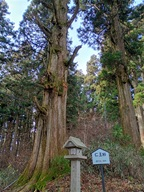 | 金剛山 | 2025.12.31 | 葛木神社境内にある仁王杉。樹齢600年。 |
| 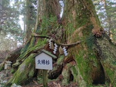 | 金剛山 | 2025.12.31 | 葛木神社境内にある夫婦杉。どちらも等しく巨木で、美しい夫婦杉だ。 |
| 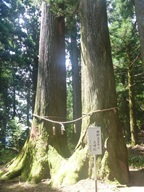 | 竜爪山 | 2025.07.26 | 穂積神社の裏にある夫婦杉。樹齢500年。 |
| 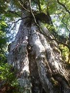 | 屋久島 | 2025.04.29 | 紀元杉。屋久杉を代表する老木。車道沿いにあるのでほとんど歩かずに見学できる。 |
| 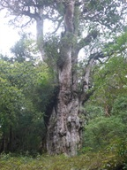 | 屋久島 | 2025.04.30 | 縄文杉。屋久杉の中でも最も有名な木であり、最も大きな木。展望デッキは木から離れていて、近くからは眺められない。 |
| 屋久島 | 2025.05.01 | 大王杉。縄文杉が見つかるまでは、屋久杉の中で最大の杉とされていた。 | |
| 屋久島 | 2025.05.01 | 中間ガジュマル。ガジュマルの巨木で、車が通れるように門状に切り開かれている。 | |
| 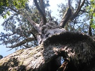 | 屋久島 | 2025.05.02 | 万代杉。比較的人通りの少ない登山道なので、間近で眺めることができる。幹には空洞がある。全体が白っぽくなっており、かなりの老木だ。 |
| 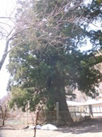 | 三方分山 | 2025.03.22 | 精進諏訪神社にある精進の大杉。国の天然記念物に指定されている巨木だ。 |
| 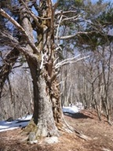 | 蛾ヶ岳 | 2025.03.22 | 栂の峠（地蔵峠）にある栂の大木。側の解説板には樹齢500年と記載されているが木は傷んでいて生きているかどうか不明だ。 |
| 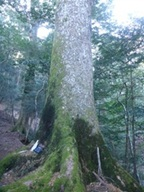 | 石尊山 | 2025.01.11 | もみ太郎と名付けられたモミの大木。周囲に同クラスの大きなモミの木は多いが、この木はその中で特に大きい。 |
| 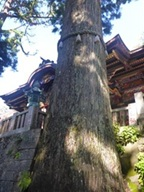 | 妙法ヶ岳 | 2024.11.03 | 立派な杉の木。三峯神社のご神木。 |
| 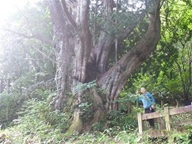 | 平湯大ネズコ | 2023.08.19 | 平湯キャンプ場の近くにある巨木。樹齢1000年、幹周り7.6mで、巨樹巨木百選に選ばれている。 |
| 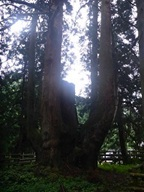 | 将軍杉 | 2023.06.10 | 将軍杉。幹周り19.31m。樹齢1400年。案内によると日本一の巨大な杉らしい。縄文杉と違ってたくさん枝分かれはしているが、幹周りは縄文杉より大きい。 |
| 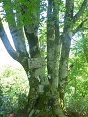 | 守屋山 | 2023.06.04 | 元気になる木。多くの幹に分かれている珍しい形のブナの大木だ。木の根元には仏が祀られている。 |
| 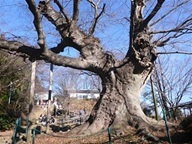 | 太田金山 | 2023.01.08 | 山頂直下の新田神社にある金山の大ケヤキ。推定樹齢800年の巨木。 |
| 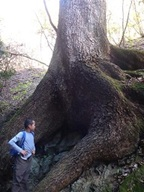 | 浅間嶺 | 2022.11.27 | 登山道に向かって伸びる巨大な木の根が見る者を圧倒する。 |
| 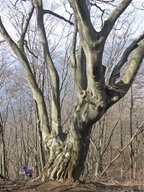 | 扇山 | 2022.03.13 | 山頂から権現山方面に少し進んだ先にある大木。 |
| 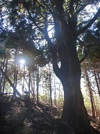 | 富士見岳 | 2022.01.09 | 登山道の脇に聳える一本杉。立派な木で、ここの地名も一本杉だ。 |
| 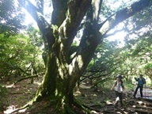 | 猫越岳 | 2021.07.22 | 登山道脇に聳える大木。この辺りは自然が良く残っていて、大きな木が多い。 |
| 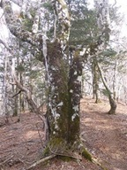 | 御正体山 | 2020.12.29 | 登山道の途中にある立派なブナの木。 |
| 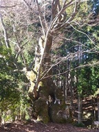 | 倉岳山 | 2020.02.11 | 神社の境内にある浜沢の大ケヤキ。昔、幹の大きな空洞は子供たちの遊び場だったらしい。 |
| 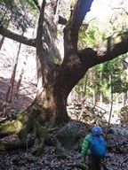 | 倉岳山 | 2020.02.11 | 穴路峠の小楢。根回り6.4m。 |
| 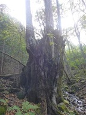 | 大栃山 | 2019.10.27 | 登山道の途中にある木。特に木の説明を記載した案内板は見当たらないが、非常に立派な木だ。 |
| 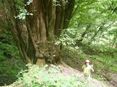 | 嫗仙の滝 | 2019.08.12 | 非常に立派なカツラの巨木。嫗仙の滝の近くにある。 |
| 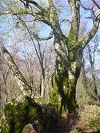 | 石鎚山 | 2019.05.01 | 登山道脇にある立派なブナの木。 |
| 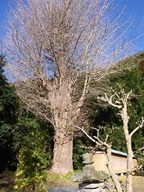 | 八雲神社 | 2019.01.14 | 樹齢約300年のみごとなイチョウの木。 |
| 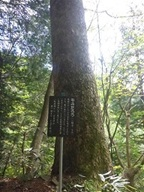 | 田立の滝 | 2018.05.06 | もみの巨木で「もみたろう」と名付けられている。周囲には外にも名の付けられた巨木が多い。 |
| 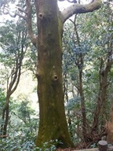 | 富山 | 2018.02.04 | ボタンスギの巨木。幹周り3.43m、樹齢300年以上。 |
| 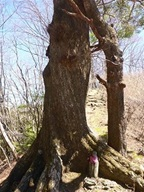 | 笠丸山 | 2017.04.23 | 地蔵峠にある巨木。根元に地蔵が祀られている。 |
| 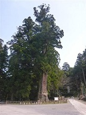 | 清澄寺 | 2017.03.19 | 清澄寺の境内にある樹齢800年の千年杉。幹回り15mの巨木。 |
| 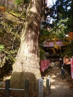 | 不動寺 | 2016.11.20 | 黒滝山の大スギ。樹齢300年以上の大きな杉。 |
 | 水沢山 | 2016.01.10 | 水沢の観音杉。樹齢700年、幹回り5.5m。 |
| 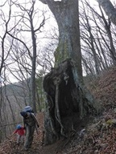 | 竜ヶ岳 | 2015.12.20 | ミズナラの巨木。根元に大きな洞がある。 |
| 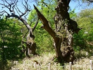 | 荒山 | 2015.05.10 | くり太郎と名付けられた2本の立派な栗の木。葉は付けていない。もう枯れているのだろうか？ |
| 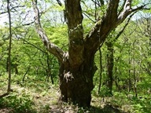 | 荒山 | 2015.05.10 | ローラーすべり台近辺は大木が所々に立っている。その中でもこの木は一際大きい。 |
 | 宇津江四十八滝 | 2015.05.02 | ケヤキの大木。足元が太く不思議な形の木だ。 |
| 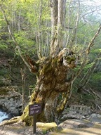 | 宇津江四十八滝 | 2015.05.02 | 立派な桂の木。変わった形をしているが、人の手が入った結果だろうか？ |
| 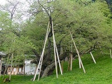 | 臥龍公園 | 2015.05.04 | 樹齢1100年の立派な桜の木。かなりの古木なので、多くの枝が支えられている。 |
 | 筑波山 | 2015.03.22 | 2本の杉が合体したような形で、どちらも巨木だ。 |
| 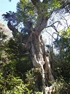 | 城ヶ崎海岸 | 2015.02.01 | 立派なヤマモモの木。かなりの古木だ。 |
| 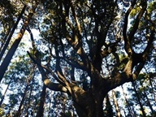 | 烏場山 | 2015.01.18 | 四方八方に太い枝を伸ばしていて、存在感がある。 |
| 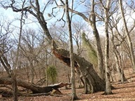 | 人形山 | 2015.01.11 | 人形山の山頂付近にあるミズナラの巨木。2013年8月に大きな枝が折れてしまった。 |
| 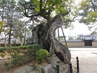 | 法隆寺 | 2015.01.02 | さほど大きな木ではないが幹は太い。かなりの古木だ。 |
| 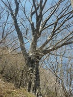 | 十二ヶ岳 | 2014.05.11 | 急斜面に立つ立派なブナの木。 |
| 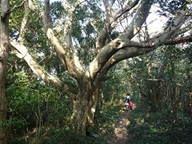 | 房の大山 | 2014.01.13 | 四方に枝を伸ばした立派な大木。 |
 | 久能山東照宮 | 2013.12.29 | 樹齢650年の大ソテツ。立派な姿だ。 |
| 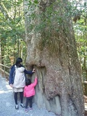 | 伊勢神宮 | 2013.12.31 | 最も格式が高いとされている伊勢神宮の境内には多くの大木が見られる。 |
| 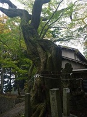 | 加波山 | 2013.11.09 | 加波山山頂部にある加波山神社の大木。 |
| 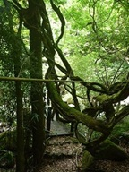 | 竜門峡 | 2013.09.14 | フジの木のトンネル。登山道はその下を通っている。フジの木にしてはかなり大きい。 |
| 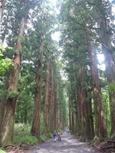 | 戸隠神社 | 2012.08.06 | 戸隠神社奥社の参道。整然と並んだ杉並木が続く。どの木も立派だ。 |
| 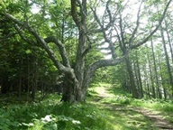 | 櫛形山 | 2012.07.16 | 登山道の脇に立っている大木。枝を大きく広げている。 |
| 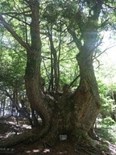 | 櫛形山 | 2012.07.16 | カラマツの巨木。推定樹齢は300年。非常に太い幹だ。 |
| 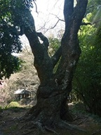 | 大中寺 | 2012.04.08 | 太平山の麓にある大中寺の境内にある大木。幹や枝が捻じれている。 |
| 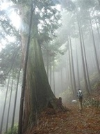 | 身延山 | 2012.03.18 | 登山道の側に聳える杉の巨木。一本だけ桁違いに大きい。 |
| 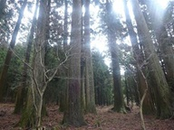 | 身延山 | 2012.03.18 | 身延山の中腹にある千本杉と呼ばれる場所。杉の巨木が林立している。 |
| 久遠時奥之院 | 2012.03.18 | 身延山の山頂にある久遠時奥之院 思親閣の境内に聳える杉の巨木。日蓮大聖人御手植杉と書かれている。 | |
| 高麗山 | 2012.03.03 | 見事な枝振りの木。他の樹木を押しやっている。 | |
| 御殿山 | 2012.02.04 | 山頂にあるマテバシイの木。他の木と合わせて遠目からでも分かるこんもりとした樹冠を形成している。 | |
| 平群天神社 | 2012.02.04 | 伊予ヶ岳の山麓にある平群天神社の夫婦クス。樹齢1000年と伝えられている。 | |
| 日本寺 | 2011.12.25 | 鋸山にある日本寺の境内。樹齢約800年の大ソテツだ。 | |
| 鹿児島神宮 | 2010.12.07 | 鹿児島神宮にある大木。枝振りが素晴らしい。 | |
| 鹿児島神宮 | 2010.12.07 | 鹿児島神宮にある大木。根元にたくさんの瘤ができている。 | |
 | 稲含山 | 2010.11.07 | ケヤキの巨木。幹回り10m、樹高30m、推定樹齢は500年。太い幹が途中で分かれていることから、夫婦ケヤキと呼ばれている。 |
| 愛鷹山 | 2010.10.27 | 目を見張る巨大なブナの木。大きく枝を伸ばしている。 | |
| 顕鏡寺 | 2010.10.02 | 石老山中腹の顕鏡寺にある蛇木杉。まるで蛇のように木の根が長く伸びている。 | |
 | 倉岳山 | 2010.04.25 | 他を圧する存在感のある巨木。森の主という感じだ。 |
| 倉岳山 | 2010.04.25 | 登山道から見える位置に聳えている大木。姿が格好いい。 | |
| 乗鞍高原 | 2010.02.28 | 一際目立つ巨木。大きなうろがある。 | |
| 関八州見晴台 | 2010.02.14 | 根元が太い大木。非常に立派な姿だ。 | |
| 沼津アルプス | 2010.02.06 | 大きな枝を真横に伸ばした巨木。少しバランスが悪そうだ。 | |
| 鶴寝山 | 2009.11.01 | 巨大なトチの木。幹回りは相当に太い。 | |
| 御神楽岳 | 2009.09.06 | 登山道脇に立つ杉の大木。二本並んで立っている。 | |
| 御岳山 | 2009.08.29 | 神代欅。樹齢1000年。とにかく幹が太い。 | |
| 生藤山 | 2009.07.05 | 軍茶利神社奥の院にある立派なカツラの木。 | |
| 三国山 | 2009.06.13 | 三国山山頂付近にあるブナの大木。枝振りが素晴らしい。 | |
| 雲峰寺 | 2009.05.09 | 大菩薩嶺の麓・雲峰寺の境内にある巨大なサクラの木。幹回り5m、樹高21.5m。 | |
| 下栗の里近辺 | 2009.05.05 | 車道から少し下ったところにある栃の木。樹高40m、幹回り10.5m。 | |
| 石裂山 | 2009.04.18 | 千本桂。桂の巨木で麓の加蘇山神社の御神木として崇められている。 | |
| 猫魔平 | 2009.03.21 | 大きなうろを持つ巨木。中に人がすっぽり入れる。 | |
| 熊野皇大神社 | 2009.02.28 | 旧碓氷峠の熊野皇大神社境内にあるシナノキ。樹齢800年。 | |
| 吾妻山 | 2008.09.15 | 何本もの木が寄り集まっているように見える、大きな木。人通りの少ない登山道にひっそりと立っている。 | |
| 益山寺 | 2008.01.24 | 益山寺境内にある大楓と大銀杏。どちらも立派な大木だ。 | |
| 御岳山 | 2008.01.19 | 夫婦杉。2つの木が繋がっている。 | |
| 建長寺 | 2007.12.01 | 鎌倉アルプスのスタート地点・建長寺の境内にある古木。 | |
| 天城山 | 2007.09.01 | ブナの巨木。他を圧倒する存在感がある。 | |
| 上高地 | 2007.08.04 | 梓川沿いの遊歩道にある大木。周囲には立派な木が多いが、この木は特に立派だ。 | |
| 両神山 | 2007.07.28 | 美しい幹を持った大木。登山道の側に立っている。 | |
| 愛鷹山 | 2007.05.26 | 大きな杉。他を圧倒する大きさで、一本だけぽつんと立っている。 | |
| 大山 | 2007.04.22 | 巨大な夫婦杉。樹齢500年。 | |
| 高水三山 | 2007.04.01 | 杉の植林地帯の中に、一際目立つ立派な木が立っている。 | |
| 武甲山 | 2007.03.21 | 杉の植林地帯の中で、一本だけ他を圧倒する大きさの杉が立っている。 |